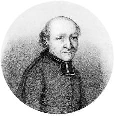
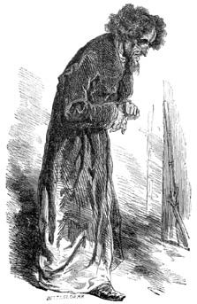
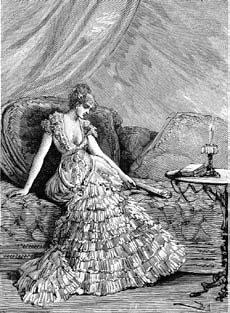
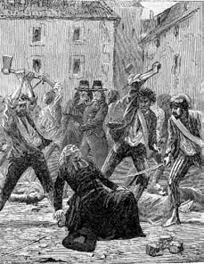
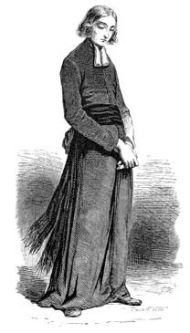
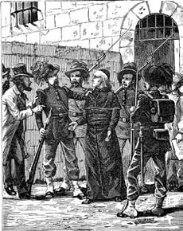

26 Mart 1897
Çocukluğum. Torino... Po'nun ötesinde bir tepe, ben annemle balkondayım. Sonra annem yok, babam gün batarken tepeye bakan balkona oturmuş ağlıyor, dedem Tanrı'nın onu yanına istediğini söylüyor.
Annemle bütün iyi Piemonteliler gibi Fransızca konuşurdum (burada konuştuğumda dili en arı Fransızcanın konuşulduğu Grenoble'da öğrenmişim gibi oluyor; oysa Paris Babil'e benziyor). Çocukluğumdan itibaren bütün Piemonteliler gibi kendimi İtalyan'dan çok Fransız hissetmişimdir. Bu nedenle Fransızları katlanılmaz bulurum.
* * *
Çocukluğum, anne ve babam değil dedemdi. Beni uyarmadan çekip giden annemden, onu engellemek için hiçbir şey yapamayan babamdan, bunu isteyen Tanrı'dan ve Tanrı'nın bu arzusunu normal karşılayan dedemden nefret ettim. Babam hep başka yerlerdeydi – İtalya yapıyorum derdi, sonra İtalya onu yaptı.
Dedem. Giovanni Battista Simonini, Savoia hanedanının ordusunda subaylık yapmıştı; Napolyon işgali döneminde ordudan ayrıldığını hatırlıyorum; Floransa Bourbonlarına katılan dedem, Toscana da bir Bonapart'ın denetimi altına geçince Torino'ya dönmüş ve hüzünlü anılarına dalan emekli bir komutan olmuştu. Burnunun üzerinde kabarcıklar olduğu için, beni yanında tuttuğunda burnundan başka şey görmezdim. Ve yüzümde tükürüklerinden sıçrayan zerreleri hissederdim. O, Fransızların ci-devant diye adlandırdığı biriydi; Ancien Régime'e hasret duyardı ve Devrim'in hatalarına asla razı gelmezdi. Culottes giymekten vazgeçmemişti, hâlâ güzel baldırları vardı; diz altından altın bağcıkla bağlardı onları; rugan ayakkabılarının bağcıkları da altındı. Koca göbekliydi; kara giysisi ve kravatı ona papaz havası verirdi. Geçmiş zamanın şıklık kuralları pudralı bir peruk takılmasını öngörse de dedem bundan vazgeçmişti, çünkü Robespierre gibi Hıristiyan yamyamları bile bundan takar olmuşlardı.
Varlıklı olup olmadığını hiç anlayamadım ama iyi yemek yemekten geri durmazdı. Dedeme ve çocukluğuma ilişkin olarak özellikle bagna caöda'yı hatırlarım: Korların kızgınlığını koruduğu ocak üzerinde sıcak tutulan güveç içinde ançuez, sarmısak ve tereyağı kızartılırdı; (daha önce soğuk su ve limon suyunda –başkaları için öyle ama dedem için sütte– bekletilmiş olan) kengerler, çiğ ya da kızartılmış biberler, lahananın beyaz yaprakları, yerelmaları, yumuşacık karnabaharlar ya da (dedem bunların yoksullara özgü olduğunu söylerdi) haşlanmış sebzeler, soğanlar, pancarlar, patatesler veya havuçlar batırılırdı. Yemeyi severdim ve dedem de (bunu sevimlilikle söylerdi) minik bir domuz yavrusu gibi şişmanladığımı görmekten hoşnut olurdu.
Beni tükürük seli altında bırakarak hayat görüşlerini anlatırdı: "Devrim, çocuğum, bizi ateist bir devletin köleleri haline getirdi; eşitsizlik eskisinden daha fazla, kardeşler birbirine düşman oldu, herkes ötekinin Kabil'i. Fazla özgür olmak ve hatta bütün gereksinimlere sahip olmak bile iyi değil. Bizim babalarımız daha yoksul ve daha mutluydular, çünkü doğayla temas halindeydiler. Modern dünya bize tarlalarımızı bozan buharı, pek çok yoksulun elindeki işi alan ama bir zamanlar sahip olduğumuz dokumaları yapamayan dokuma tezgâhlarını verdi. Kendi başına terk edilen insan, özgür olmayacak kadar kötüdür. İşine yarayan o birazcık özgürlük ona bir hükümdar tarafından verilmelidir."
Ama en sevdiği konu Rahip Barruel idi. Çocukluğumu düşündüğüm her an Rahip Barruel'i görür gibi oluyorum; bir süredir ölmüş olması gerekse bile sanki evde oturur gibiydi.

...Rahip Barruel'i görür gibi oluyorum; bir süredir ölmüş olması gerekse bile sanki evde oturur gibiydi.
"Bak çocuğum" diyen sesini duyuyorum dedemin, "Devrim çılgınlığı bütün Avrupa ülkelerini sarstıktan sonra, Devrim'in aslında Tapınak Şövalyeleri'nin tahta ve kiliseye karşı daha doğrusu krala ve özellikle de Fransa krallarına ve kutsal kilisemize karşı yürüttükleri evrensel komplo olduğu söylentisi yayıldı... Bu söylentiyi yayan ses geçen yüzyılın sonunda anılarını Mémoires pour servir à l'histoire du jacobinisme adı altında yayımlamış olan Rahip Barruel'e aitti..."
"Ama dede efendim" diye soruyordum, "Tapınak Şövalyeleri'nin ne ilgisi vardı?" Aslında anlatacağı öyküyü artık ezbere biliyordum ama en sevdiği konudan söz edebilsin diye böyle yapıyordum.
"Çocuğum, Tapınak Şövalyeleri son derece kudretli şövalyelerin oluşturduğu bir örgüttü ve Fransa kralı mallarına el koyabilmek için onları yok etti ve büyük kısmını da yaktı. Ama canlarını kurtaranlar Fransa kralından intikam alabilmek için yeniden gizlice örgütlendiler. Ve gerçekten de Kral Louis'nin giyotinle idam edildiğinde tanınmayan biri kürsüye fırladı, o zavallı başı aldı ve havaya kaldırarak şöyle bağırdı: 'Jacques de Molay, öcün alındı!' Molay kralın Paris'te Île de la Cité'nin ucundaki noktada yaktırdığı Tapınak Şövalyeleri'nin büyük üstadıydı."
"İyi de ne zaman yakılmıştı bu Molay?"
"1314 yılında."
"Hesap yapmama izin verin dede efendim, ama bu Devrim'den beş yüz yıl önce oluyor. Tapınak Şövalyeleri o beş yüz yıl boyunca gizli kalabilmek için ne yaptılar?"
"Katedrallerde çalışan eski duvar ustalarının örgütüne sızdılar, bu örgütlerden de İngiliz masonluğu doğdu; örgütün adının böyle olmasının nedeni üyelerine, özgür duvarcılar anlamına gelen free masons denmesiydi."
"Peki duvarcılar neden devrim yapmak zorundaydılar?"
"Barruel asıl Tapınak Şövalyeleri'nin ve özgür duvarcıların Bavyera İlluminatoları tarafından ele geçirilip yozlaştırıldıklarını keşfetmişti. Ve bu, Weishaupt adında bir adam tarafından kurulmuş korkunç bir gizli topluluktu; her üye sadece kendinden bir üst konumdaki kişiyi tanıyordu; daha yukarıdakileri ve amaçlarını bilmiyordu, oysa amaç sadece kiliseyi ve tahtı yok etmek değil, yasası ve ahlakı olmayan, kadınlar dahil bütün nimetlerin ortak kullanıldığı bir toplum kurmaktı; bütün bunları bir çocuğa anlattığım için Tanrı beni bağışlasın ama, İblis'in izlerini tanımak gereklidir. Ve Bavyera İlluminati tarikatına çift dikişle bağlı olanlar da rezil Encyclopédie'ye can veren ve her türlü inancı reddeden kişiler yani Voltaire, d'Alembert, Diderot ve İlluminati'ye öykünerek Fransa'da Işıklar Asrı'ndan; Almanya'da Açıklanma ya da Açıklama'dan söz edenler ve de sonunda da kralı düşürmek amacıyla gizlice bir araya gelerek bizzat Jacques de Molay'in adından kaynaklanan ve Jakobenler denen kulübe yol açan sürüydü. İşte Fransa'da Devrim'i patlatmak için kimlerin tezgâh kurduğunu öğrendin!"
"Şu Barruel her şeyi anlamıştı..."
"Hıristiyan şövalyelerinin oluşturduğu bir nüveden İsa düşmanı bir tarikatın doğabileceğini anlayamadı ama. Hamurun içindeki maya nasıldır bilirsin; eksik kalırsa hamur kabarmaz, şişmez ve ekmek olmaz. Tapınak Şövalyeleri'nin ve özgür duvarcıların gizli toplantılarının sağlıklı bedenlerine onları tüm zamanların en şeytani örgütü haline getirecek mayayı kader mi, şeytan mı bilmiyorum kim koydu ve neydi bu maya?"
Dedem burada sözlerine ara verir, sanki daha iyi konsantre olmak istercesine ellerini kavuşturur, kurnazca gülümser ve hesaplanmış ama muzaffer bir tevazuyla şöyle derdi: "Bunu söyleme cesaretini ilk bulan kişi senin deden oldu sevgili çocuğum. Barruel'in kitabını okuyabildiğim zaman, ona bir mektup yazmakta tereddüt etmedim. Şu odanın dibine git de, oradaki mücevher kutusunu alıver oğlum."
Dediğini yapıyordum, dedem mücevher kutusunu boynuna astığı altın yaldızlı bir anahtarla açıyordu ve içinden kırk yıldır sararmış bir kâğıt çıkartıyordu. "Bu Barruel'e yazdığım ve daha sonra temize çektiğim mektubun orijinalidir."
Dramatik molalarla mektubu okuyan dedem gözümün önünde:
"Efendim, elinizde tuttuğunuz bu mektup cahil bir asker olan bendeniz tarafından son yüzyılın en muazzam yapıtı olarak nitelendirmekten övünç duyduğum eserinizi en içten duygularımla kutlamak amacıyla yazılmıştır. Ah! Deccal'a yol hazırlayan ve sadece Hıristiyan dininin değil bütün dinlerin, bütün toplumların, bütün düzenlerin acımasız düşmanları olan bu ahlaksız tarikatların maskesini düşürmekle ne iyi yaptınız. Ama hafifçe olsun değinmediğiniz bir şey daha var. Belki de bunu özellikle yaptınız, çünkü o hem en az tanınmış olanı hem de buna bağlı olarak en az korkutanı. Ama bana kalırsa, büyük zenginlikleri ve Avrupa'nın neredeyse bütün devletlerinde sahip olduğu himaye göz önünde bulundurulursa en ürkütücü gücü. Yahudi tarikatından söz ettiğimi çok iyi anladınız efendim. Bu, öteki tarikatlardan kesinlikle ayrı ve düşman olarak görünüyor ama aslında öyle değil. Hatta bunlardan birinin kendini Hıristiyanlık'ın düşmanı gibi göstermesi Yahudilerin onu kayırması, kollaması, koruması için yeterlidir. Onun modern sofistleri, masonları, Jakobenleri, İlluminati'yi desteklemek ve yönlendirmek için bütün altın ve gümüşünü savurduğunu görmedik mi? Demek ki Yahudiler, bütün öteki tarikatçılarla birlikte Hıristiyanlık'ı mümkünse yok etmek için tek bir hizip oluşturuyorlar. Ve Efendim, bütün bunları abarttığımı sanmayınız. Bizzat Yahudilerin bendenize söylediklerinden başka bir şey aktarmıyorum size..."
"Peki, nasıl öğrendiniz bunları Yahudilerden?"
"Yirmi yaşını henüz geçmiştim; Savoia ordusunun genç bir subayı olduğum dönemde Napolyon Sardinya devletlerini işgal etti; biz Millesimo'da yenildik ve Piemonte Fransa'ya bağlandı. Bu, kralın subayları olan bizleri yakalayıp asmak isteyen tanrısız Bonapart yanlılarının zaferi oldu. Artık ortalıkta üniformayla dolaşmanın hatta görünmenin tehlikeli olduğu söylenmeye başlanmıştı. Babam ticaret adamıydı ve tefecilik yapan bir Yahudi'yle ilişkisi olmuştu; adamın nedenini bilmediğim bir şekilde babama gönül borcu vardı ve onun yardımları sayesinde havanın düzelmesini beklerken birkaç haftalığına şehir dışına çıkarak tefecinin Floransa'daki bazı akrabalarının yanına gittim; elbette bana hiç de ucuza mal olmayan bir ödeme karşılığında o zamanlar bu bizim konağımızın arkasında, San Filippo ve Rosine sokakları arasında bulunan gettoda küçük bir odaya sığındım. O insanlara karışmaktan pek hoşlanmıyordum ama kimsenin beni aramayacağı tek yer burasıydı; Yahudiler buradan çıkamazlardı ve efendi insanlar onlardan uzak duruyorlardı."
Dedem o zaman dayanamadığı bir görüntüyü kovmak istercesine elleriyle gözlerini kapatıyordu: "İşte, fırtınanın geçmesini beklerken bu pis labirentin içinde yaşadım; mutfağın, yatağın, oturağın bir arada bulunduğu tek göz odada sekiz kişinin yaşadığı oluyordu; hepsi kansızlıktan, solgunluktan Sèvres porseleni gibi belli belirsiz mavi benizliydiler; sürekli tek bir mum ışığıyla aydınlanan kuytu ve karanlık köşeleri kolluyorlardı. Tek bir damla kandan yoksun, sarımsı beniz, balık jölesi renginde saçlar, tanımlanması olanaksız bir kırmızılıkta sakal, bir zamanlar siyah olan buruşuk bir redingot... Kaldığım odanın pis kokusuna dayanamıyordum ve beş avlu arasında turlayıp duruyordum; hepsini çok iyi hatırlıyorum: Büyük Avlu, Rahipler Avlusu, Bağ Avlusu, Meyhane Avlusu, Teras Avlusu; bütün bu avlular Karanlık Revaklar denen üzeri örtülü korkunç koridorlarla birbirlerine bağlanıyordu. Şimdi Carlina Meydanı'nda daha doğrusu her yerde Yahudilere rastlayabilirsin, çünkü Savoia'nın ödü patlıyor; oysa o zamanlar o güneş almayan koridorlarda birbirlerini eziyorlardı, (Bonapart yanlılarından korkmasam) o tiksinti verici pis kalabalık arasında yaşamaya dayanmam mümkün değildi."
Dedem, ona rahatsızlık veren dayanılmaz bir tadı silebilmek istercesine bir mendille dudaklarını ıslatarak konuşmasına ara verirdi: "Ama kurtuluşumu onlara borçluydum; ne kadar gurur kırıcı bir durumdu bu. Evet, biz Hıristiyanlar onları hakir görüyorduk ama onlar da bize karşı iyi duygular beslemiyor hatta bizden nefret ediyorlardı; zaten bugün hâlâ bu nefretleri sürüyor. Onlara Livorno'da Yahudi bir ailede doğduğumu; maalesef beni vaftiz ettirmiş olan akrabaların yanında büyüdüğümü ama kalben Yahudiliğimi koruduğumu anlatıyordum. Bu itiraflarım onları pek etkilemiş gibi görünmüyordu, çünkü –söylediklerine göre– benim durumumda olan çok kişi vardı ve artık buna aldırmıyorlardı. Yine de sözlerim Teras Avlusu'nda, mayasız ekmek pişirilen fırının yanında yaşayan bir ihtiyarın güvenini kazanmıştı."
Dedem bu karşılaşmayı hatırlayınca canlanıyor, ihtiyarı gözlerini ve ellerini onun gibi hareket ettirerek anlatıyordu. Anlaşıldığına göre Mordechai adındaki kişi, Suriye asıllıydı ve Şam'da hazin bir olaya karışmıştı. Şehirde bir Arap çocuk ortadan kaybolmuştu; önce Yahudiler akla gelmemişti, çünkü onların ayinlerinde yalnızca Hıristiyan çocukları öldürdükleri sanılırdı. Ama sonra bir kuyu dibinde minik bir cesedin kalıntıları bulunmuştu: Çocuk önce bin parçaya bölünmüş, sonra havanda ezilmiş gibiydi. Suç tarzı, genellikle Yahudilerin itham edildiği suçlara öylesine benziyordu ki jandarma, yaklaşan Pesah için mayasız ekmek yoğurmak isteyen ama Hıristiyan bir çocuk yakalayamayan Yahudilerin Arap çocuğu vaftiz ettikten sonra un ufak ettiklerine karar vermişti.
"Vaftiz" diyordu dedem, "kim tarafından yapılırsa yapılsın geçerli sayılır; yeter ki vaftiz eden kişi bunu Kutsal Roma Kilisesi niyetiyle yapsın; o kalleş Yahudiler de bunu çok iyi bilirlerdi ve şu sözleri dile getirmekten hiç utanç duymazlardı: 'Kendim bu inançta olmasam bile seni inançlı bir Hıristiyan'ın yapmış olacağı şekilde vaftiz ediyorum.' İşte o minik şehit, şeytanın niyeti sonucu olsa da en azından cennete gitme şansını kazanmıştı."
Mordechai'dan kuşkulanmışlardı. Onu konuşturabilmek için ellerini arkasından bağlamışlar, ayaklarına ağırlıklar asmışlar, onlarca kez bir makarayla aşağı yukarı indirip çıkarmışlar ve sonunda yere düşürmüşlerdi. Sonra itirafta bulunana kadar, burnunun altına kükürt koymuşlar, buz gibi suya sokmuşlar ve çıkarmaya çalıştığı başını suya batırmışlardı. Söylendiğine göre, sonunda bu işkenceden kurtulabilmek için olayla hiçbir ilgisi olmayan beş din kardeşinin adını vermişti. Bu beş kişi idam edilirken, kendisi artık hiçbiri yerinde olmayan uzuvlarıyla serbest bırakılmıştı ama aklını kaybetmişti; iyi yürekli birileri onu Cenova'ya giden bir şilebe bindirmişlerdi, yoksa Yahudiler onu taşlayarak öldüreceklerdi. Hatta gemide Barnabit bir rahip tarafından vaftize ikna edildiği, onun da Sardinya Krallığı'na ait topraklara çıktığında yardım elde edebilmek amacıyla bunu kabul ettiği ama atalarına ait inancı yüreğinde koruduğu da söylenirdi. Torino'ya ayak bastığında Hıristiyanların deyimiyle Marrano yani bir dönek olacak ve gettodan sığınma isteyecekti; dinini değiştirdiğini her zaman yadsımıştı ve pek çok kişi onun yeni İsevi inancını yüreğinde saklayan düzmece bir Yahudi olduğunu düşünüyordu – yani iki kez dönekti. Ama hiç kimse denizler ötesinden gelen bu söylentileri kanıtlayamadığı ve aklını kaçırmasına acıdıkları için başkalarının merhametiyle hayatta kalabildi; son derece azla yetinen zavallıyı gettoda kimsenin oturmaya cesaret edemeyeceği in gibi bir yere tıktılar.
Dedem, Şam'da ne yapmış olursa olsun, ihtiyarın aslında delirmediğini düşünüyordu. Sadece Hıristiyanlara karşı dinmesi olanaksız bir nefret besliyordu ve penceresi bile olmayan o mezbelede, dedemi bileğinden tutuyor, karanlıkta parlayan gözleriyle bakıyor ve hayatını intikama adadığını söylüyordu. Ona kitapları Talmud'un Hıristiyan ırkına nefret duymayı buyurduğunu, onların yani Yahudilerin, Hıristiyanları bozmak için masonları icat ettiklerini, kendinin de üst düzeyde ama kimliği gizli bir mason olduğunu, Napoli'den Londra'daki locaları idare ettiğini, ama onu dört bir yanda arayan Cizvitler tarafından hançerlenmemek için gizli, gizemli ve sırda kalması gerektiğini anlatıyordu.
Konuşurken sanki her karanlık köşeden elinde hançeriyle bir Cizvit çıkacakmış gibi çevresine bakınıyor, sonra gürültüyle sümkürüyor, biraz hazin koşullarına ağlıyor, biraz kurnazca ve intikam duygusuyla ama asıl bütün dünyanın onun korkunç kudretinden bihaber olması nedeniyle gülümsüyor, pis elleriyle Simonini'nin ellerine vuruyor ve hayal kurmayı sürdürüyordu. Ve ona diyordu ki, Simonini isterse örgüt onu da sevinçle kabul edebilirdi ve kendisi onu mason localarının en gizlisine sokabilirdi.
Dedeme, hem Maniheizm dininin peygamberi Mani'nin hem de Haşhaşin adını verdiği müritlerini afyona alıştıran ve onları sonra Hıristiyan prenslerini öldürmeye gönderen Dağın Şeyhi'nin Yahudi ırkından geldikleri gizli bilgisini de vermişti. Farmasonlar ve İlluminati örgütü üyeleri iki Yahudi tarafından eğitilmişlerdi; Hıristiyanlık karşıtı bütün tarikler Yahudilerden kaynaklanıyordu, bu tarikler şimdi yeryüzünde o kadar artmışlardı ki, her cinsiyetten, her devletten, her sınıftan ve her koşuldan bir milyon kişiyi aşmışlardı; pek çok yüksek dereceli din adamı ve hatta kardinal de bunlar arasındaydı; bir papanın da kendi yollarına katılmasını umut ediyorlardı (dedem, sonraki yıllarda Vatikan'da Aziz Paulus'un tahtına oturan IX. Pius'un varlığında bir muğlaklık olduğunu söylemişti; bu da pek gerçekdışı görünmüyordu gerçekten); bunlar Hıristiyanları güzelce kandırmak için kendileri de Hıristiyan gibi görünüyorlar, ellerinde düzenbaz papaz yardımcılarından satın aldıkları sahte vaftiz belgeleriyle köy köy dolaşarak seyahat ediyorlar; para ve hile zoruyla bütün hükümetlerden bir medeni durum elde etmeyi; ötekiler gibi vatandaşlık elde edince de mülk ve arazi satın almayı; tefecilik sayesinde Hıristiyanların ellerindeki nakit paraya ve değerli mücevherlere konmayı; bir yüzyıl geçmeden dünyanın efendisi haline gelmeyi, bütün öteki mezhepleri yerle bir ederek herkese hükmetmeyi, Hıristiyanların kiliselerini havraya çevirmeyi, milletin geri kalanını da köle yapmayı umut ediyorlardı.
"İşte" diye sonlandırıyordu dedem sözlerini, "Barruel'e açıkladığım buydu. Belki biraz abartmış olabilirim ama ihtiyarın bana gerçeği söylediğine inanmıştım ve hâlâ da inanırım. Ve okumama izin verirsen, mektuba şöyle yazdım."
Ve dedem okumayı sürdürüyordu:
"İşte Efendim, Yahudi milletinin kendi kulaklarımla duyduğum hain planları bunlardı... Bu nedenle, sizinki gibi enerjik ve üstün bir kalemin yukarıda adı geçen hükümetlerin gözünü açması ve bu halkı layık olduğu ve daha siyasi, daha arif babalarımızın onları tutmaya özen gösterdikleri düzeye döndürmek için yol göstermesi konusunda yazması son derece arzu edilen bir durumdur. İşte Efendim, bu nedenle sizi özellikle kendi adıma davet ediyorum; bu mektupta bulacağınız her türlü hata yüzünden bu İtalyan'ı, bu askeri bağışlamanızı diliyorum. Kilisesini zenginleştirdiğiniz o ışıklı yazılarınız karşılığında Tanrı'nın elinin sizi en bereketli biçimde ödüllendirmesini diliyorum; Tanrı sizi okuyanlara en yüksek itibarı ve en derin hürmeti ilham etsin; size karşı derin bir saygı beslemekten onur duyan, bendeniz ve sadık hizmetkârınız Giovanni Battista Simonini."
Tam bu noktada dedem mektubu yazı masasına bırakırdı ve ben de şu soruyu sorardım: "Peki ne dedi Rahip Barruel?"
"Bana yanıt verme lütfunda bulunmadı. Ama ben Vatikan'da tanıdıklarım olduğu için o ödleğin bu gerçekleri yayarsa Yahudilerin bir kıyıma girmelerinden korktuğunu ve aralarında masumlar olduğunu da düşündüğü için onları kışkırtma yürekliliğini gösteremediğini öğrendim. Dönemin Fransız Yahudilerinin çevirdiği dolapların da bunda etkisi olmuş olabilir; Napolyon ihtirası konusunda onların desteğini alabilmek için Büyük Sanhedrin temsilcileriyle görüşme kararı aldığında birileri rahibe suları bulandırmaması gerektiğini fısıldamış olmalı. Ne var ki Barruel susmayı da içine sindiremiyordu ve bu nedenle mektubumun orijinalini Papa VII. Pius'a gönderdi – başka kopyalarını da piskoposlara iletti. Olay burada da bitmedi, çünkü mektubu Napolyon'a tanıtsın diye o zamanlar Gallikan Kilisesi'nin başpiskoposu olan Kardinal Fesch'e de iletti. Aynı şeyi Paris polisinin şefine de yaptı. Ve bana söylediklerine göre Paris polisi benim ciddi bir tanık olup olmadığımı öğrenmek için Roma Kilisesi nezdinde bir araştırma yürütmüş – şeytanın gözünde öyleydim ve kardinaller de bunu yadsıyamazlardı. Her neyse, Barruel taşı atıyor ama elini saklıyordu; kitabının yarattığından daha büyük bir fırtına yaratmak istemiyordu ama susarmış gibi yapıp benim açıklamalarımı dünyanın yarısına yayıyordu. Barruel'in, XV. Louis Cizvitleri Fransa'dan kovana kadar, Cizvitler tarafından eğitilmiş olduğunu bilmelisin; sonra görevini laik rahip olarak yürütmüş, VII. Pius mezhebe yasallık tanıyınca yeniden Cizvit rahip kisvesine bürünebilmiştir. Şimdi benim tutkulu bir Katolik olduğumu, rahip cüppesi giyen herkese karşı derin bir saygı beslediğimi öğrendin ama bir Cizvit her zaman bir Cizvittir; sağ gösterip sol vurur, şunu söyler bunu yapar ve de Barruel de aynen böyle davrandı."
Ve dedem ağzındaki tek tük dişlerin arasından tükürükler saçarak gülüyor ve küstahlığıyla eğleniyordu. "İşte benim minik Simonino'm" diye bitiriyordu sözlerini, "ben ihtiyarım, çölde bağıran adam olmak hevesim geçti, onlar bana kulak vermek istemedilerse bunun yanıtını Yüce Rabbimize verecekler ama şu lanet olası Yahudilerin gittikçe güçlendikleri ve korkak kralımız Carlo Alberto'nun onlara karşı gayet hoşgörülü davrandığı şu günlerde tanıklık meşalemi siz gençlere emanet ediyorum. Ne var ki kendi de onların dalavereleriyle tepetaklak olacak..."
"Burada Torino'da da işbirliği yapıyorlar mı?" diye soruyordum.
Dedem sözlerine kulak veren biri olabilir gibi çevresine bakınırken, günbatımının gölgeleri odayı karartmaya başlıyordu: "Burada ve her yerde. Lanet olası bir ırktırlar ve okumayı bilenlerin ileri sürdüğü üzere Talmud kitaplarında, Yahudilerin günde üç kez Hıristiyanlara lanet okumaları, Tanrı'ya onların soylarının kökünün kuruması için niyaz etmeleri, içlerinden biri bir uçurum kenarında bir Hıristiyan'a rastlarsa, onu aşağı itmesi gerektiği yazar. Senin adın neden Simonino, biliyor musun? Anne ve babanın seni, 1400'lü yıllarda Trento'da onu kaçıran ve kanını ayinlerinde kullanmak isteyen Yahudiler tarafından öldürülen minik şehidin yani Aziz Simonino'nun anısına vaftiz etmelerini istedim."
* * *
"Uslu durmazsan ve hemen gidip uyumazsan bu gece korkunç Mordechai seni görmeye gelir." Dedem beni böyle tehdit ediyor. Ben de çatının altındaki odamda, bu köhne evin her köşesinden gelen çıtırtılara kulak kabartarak, beni alıp o cehennem evine sürüklemek ve bebek şehitlerin kanıyla yoğrulmuş hamursuzlarından yedirmek için gelecek olan korkunç ihtiyarın ayak seslerini ahşap merdivenlerde handiyse duyarak uyumaya çalışıyorum. Babama meme vermiş, halen evimizde terliklerini sürükleyerek gezen Dadı Teresa'dan duyduğum öteki masallar yüzünden Mordechai'ın "Hum hum, Hıristiyan kokusu alıyor burnum!" diye geveleyerek yaklaştığını sanıyorum.

... beni alıp o cehennem evine sürüklemek ve bebek şehitlerin kanıyla yoğrulmuş hamursuzlarından yedirmek için gelecek olan korkunç ihtiyarın ayak seslerini ahşap merdivenlerde handiyse duyarak uyumaya çalışıyorum.
* * *
Artık neredeyse on dört yaşındayım ve defalarca gettoya girme hevesine kapıldım; Piemonte bölgesinde pek çok kısıtlama kaldırılmak üzere olduğundan, getto artık eski sınırlarının dışına taştı. Bu yasak dünyanın sınırlarında dolaşırken belki de Yahudilere rastlamışımdır ama pek çoğunun kadim tarzlarından uzaklaştıklarını duymuştum. Dedeme bakılacak olursa artık kılık kıyafet değişimine girmişlerdi, başka türlü giyinip kuşandıkları için yanımızdan geçseler bile onları tanıyamazdık. Gene gettonun sınırlarında dolaşırken siyah saçlı, yakınlardaki bir dükkâna üzeri bezle örtülü kim bilir nasıl bir sepet taşıyarak her sabah Carlina Meydanı'ndan geçen bir kıza rastladım. Ateşli bakışları, kadife gözleri, esmer teni vardı. Yahudi olması mümkün değildi, çünkü dedemin bana tanımladığı o yırtıcı kuş suratlı, zehirli bakışlı erkeklerden böyle bir kız çıkmazdı. Ama gettodan geldiği kesindi.
İlk kez Dadı Teresa dışında bir kadına bakıyordum. Bütün sabahlar yeniden, bir kez daha oradan geçiyorum ve onu uzaktan görmemle yüreğim deli gibi atmaya başlıyor. Onu göremediğim sabahlarda ise bir çıkış yolu arar ama tümünü reddedercesine dönüp duruyorum; dedem sofra başında öfkeyle ekmek içlerini ufalayarak beni beklerken, ben hâlâ alanda oluyorum.
Bir sabah kızı durdurmaya cesaret ediyorum, gözlerim yere inik, sepeti taşımasına yardım etmek için izin istiyorum. Kız şivesi bozuk diliyle ve de kibirli bir edayla tek başına taşıyabildiğini bildiriyor. Ama bana monssü değil küçük çocuk anlamına gelen gagnu diye hitap ediyor. Onu bir daha hiç aramadım, hiç görmedim. Bir Siyon kızı tarafından küçük düşürüldüm. Yoksa şişman olduğum için mi? İşte Havva'nın kızlarına o anda, orada savaş açtım.
* * *
Çocukluğum boyunca dedem beni Kraliyet okullarına göndermek istemedi, çünkü orada sadece Carbonaroların ve Cumhuriyetçilerin öğretmenlik yaptığını ileri sürüyordu. Bütün o yıllarımı evde, bana ait bir şeyin elimden alındığını hissedercesine nehir kıyısında oynayan çocukları hınç duygusuyla seyrederek tek başıma geçirdim. Onun dışındaki zamanlarda daima dedemin yaşıma uygun olarak seçtiği bir Cizvit papazla ve onu çevreleyen karakargalarla odaya kapanıp ders çalışırdım. Öğretmenlerin her birinden nefret ederdim ve bunun nedeni sadece parmaklarıma vurmaları değildi; asıl neden –nadiren ve dalgınca da olsa hayatıma müdahale eden– babamın rahiplere duyduğu nefreti bana aşılamasıydı.
"Ama benim öğretmenlerim rahip değil, Cizvit papazı" diyordum.
"Daha da fena" diye yanıtlıyordu babam. "Cizvitlere asla güven olmaz. Kutsal bir peder ne yazmıştı biliyor musun? (Bak, bir peder diyorum, mason, Carbonaro, Illuminato ya da beni suçladıkları gibi İblis değil; kutsal bir peder olan Rahip Gioberti). Gözden düşüren, tedirgin eden, sıkıntı veren, yalan söyleyen, musallat olan, özgür ruhlu insanları mahveden Cizvitliktir; kamu görevlerinden iyileri ve hünerlileri kovup yerine mutsuz ve ödlekleri koyan Cizvitliktir; yavaşlatan, köstekleyen, kargaşa yaratan, sersem eden, güçsüzleştiren, özel ve kamu eğitimini bin bir biçimde yozlaştıran, öç duygusu, güvensizlik, hınç, nefret, kavga eken; bireyler, aileler, sınıflar, devletler, hükümetler, halklar arasında gizli ve aşikâr anlaşmazlık yaratan Cizvitliktir; zihinleri zayıflatan, yüreklere egemen olan; arzulara miskinlik veren, gevşek bir disiplinle gençleri yoldan çıkartan, olgun insanları riyakâr bir ahlakla yozlaştıran, dostlukla, aile içi huzurla, evlat sevgisiyle, vatandaşların vatan aşkıyla savaşan, onu gevşeten ve söndüren Cizvitliktir. Dünyada bu kadar kof (dedi), çıkarları söz konusu olduğunda bu kadar sert ve acımasız olan tek topluluk İsa Derneği'dir. O yumuşak ve sevimli yüzün altında, o tatlı ve ballı sözlerin, o sevgi ve güven dolu el uzatışın arkasında, Düzen'in disiplinine ve üstlerinin işaretlerine uygun biçimde yanıt veren Cizvit'in demir gibi, en kutsal duygulara, en soylu sevgilere kapalı bir ruhu vardır. Machiavelli'nin, vatanın sağlığı söz konusu olduğunda, ahlaklı ya da ahlaksız, merhametli ya da acımasız gibi unsurların göz önüne alınmaması gerektiği ilkesine ciddi biçimde uyar. İşte Cizvitlerin çocukluktan itibaren yatılı okullarda okumalarının arkasında bu neden yatar: onlar ailevi duyguları tanıyamazlar, arkadaşları olmaz, en sevdikleri okul arkadaşlarının bile kabahatlerini yöneticilere iletmekte tereddüt etmezler, yüreklerinin her hareketini disipline sokarlar, mutlak itaate hazırdırlar: perinde ad cadaver.[3] Gioberti, Hindistan'da tanrı adına insanları boğazlayan, ipe geçirerek ya da bıçaklayarak düşmanlarının bedenlerini ortadan kaldıran insanlar olduğunu söylerken, İtalya'daki Cizvitlerin de insan ruhunu sürüngenler gibi dille ya da kalemle öldürdüklerini belirtir."
"Beni hep gülümsetmiş olsa da" diye bitiriyordu babam sözlerini, "Gioberti bu düşüncelerinin bazılarını bir önceki yıl yayımlanmış olan, Eugène Sue'nün L'ebreo Errante (Serseri Yahudi) adlı kitabından almıştı."
* * *
Babam. Ailenin kara koyunu. Dedeme kulak verilecek olursa Carbonari örgütüne katılmıştı. Dedemin görüşleri söz konusu olduğunda, alçak sesle onun saçmalıklarına kulak asmamamı söylüyordu ama utancından mı, babasının düşüncelerine olan saygısından mı yoksa beni umursamazlığından mı bilmem, kendi ideallerinden bana hiç söz etmiyordu. Dedemin kendi Cizvit rahipleriyle konuşmalarına kulak kabartarak ya da Dadı Teresa'nın kapıcıyla yaptığı gevezelikleri dinleyerek, babamın sadece Devrim'e ve Napolyon'a inananlardan değil aynı zamanda İtalya'nın, Avusturya İmparatorluğu'nu, Bourbonları ve Papa'yı üzerinden silkeleyip, (dedemin huzurunda asla telaffuz edilmemesi gereken bir sözcük) bir Ulus haline gelmesini arzu edenlerden yana olduğunu anlamıştım.
* * *
Temel eğitimimi ağaç sansarına benzeyen Peder Pertuso'dan aldım. Günümüz tarihini bana öğreten Peder Pertuso oldu (dedem beni geçmiş tarih konusunda eğitiyordu).
Daha sonra Carbonari hareketlerine ilişkin ilk söylentiler yayılmaya başladı –bunları babamın adına gelen ve dedem yok etmeden önce göz atma fırsatı bulduğum gazetelerden okuyordum–; Latince ve Almanca derslerimi Peder Bergamaschi veriyordu; dedeme son derece yakın olan bu rahip için konakta benimkine yakın bir oda ayrılmıştı. Peder Bergamaschi... Peder Pertuso'nun aksine genç, yakışıklı, dalgalı saçlı, güzel yüzlü, hitabeti büyüleyici bir kişiydi ve en azından evdeyken son derece temiz ve şık cüppesini onurla taşırdı. Parmakları incecik beyaz ellerini, bir kilise adamından bekleneceğinden daha uzun tırnaklarını hatırlıyorum.
Derslerime eğilmiş çalıştığımı görünce genellikle arkama oturur, başımı okşar, acemi bir genci bekleyen tehlikeler konusunda beni uyarır, Carbonari örgütünün komünizm denen en büyük musibetin kılık değiştirmiş hali olduğunu söylerdi.
"Komünistler" derdi, "düne kadar korkutucu değillerdi ama Marsh'ın (böyle telaffuz ederdi) yayımladığı manifestodan sonra bağlantıları görmezden gelemeyiz. Sen Babette d'Interlaken hakkında hiçbir şey bilmiyorsun. Weishaupt'un kendine yaraşır torun çocuğu, İsviçre Komünizminin Büyük Bakiresi diye anılan kişisidir."
Peder Bergamaschi'nin o günlerde sıkça sözü edilen Milano ya da Viyana ayaklanmalarından ziyade, aklını neden İsviçre'de Katolikler ve Protestanlar arasında yaşanan dinsel çatışmalara taktığını bilmiyordum.
"Babette yasadışı doğmuştu, hırsızlıklar, soygunlar ve dökülen kanlar arasında büyümüştü; sürekli işittiği küfürlerin dışında Tanrı'yı tanımıyordu. Luzern çatışmalarında, radikaller ilk kantonlardaki birkaç katoliği öldürdüklerinde kalbini ve gözlerini Babette'e söktürüyorlardı. Babil'in Fahişesi'ni hatırlatan sarı saçlarını rüzgârda savurarak gizli örgütlerin ulağı kimliğini, o gizemli çetelerin bütün kurnazlıklarını ve dalaverelerini kulağına fısıldayan iblis kimliğini albenisi ardına gizliyordu; bir anda beliriveriyor, cin gibi göz açıp kapayana dek yok oluveriyordu, çok derin sırlardan haberdardı, mühürlerini değiştirmeden diplomatik mektupları kaçırıyor, Viyana'nın, Berlin'in ve hatta Petersburg'un en özel kabinelerinde engerek yılanı gibi sürünüyor, sahte senetler düzenliyor, pasaport numaralarını değiştiriyor, çocukluğundan beri zehir sanatını çok iyi tanıyor ve de bunları örgütün emrettiği biçimde yutturuyordu. Sanki Şeytan'ın emrindeydi, ateşli gücü, bakışlarının büyüsü akla bunu getiriyordu."
Gözlerimi fal taşı gibi açık tutmaya, kulak vermemeye çalışıyordum ama Babette d'Interlaken geceleri rüyama giriyordu. Yarı uyur halimde, sarı saçları omuzlarına dökülen o iblisin görünümünü zihnimden silmeye uğraşıyordum; o şeytani ve mis kokulu cinin omuzları elbette çıplaktı, göğsü inançsız ve günahkâr bir yırtıcı hayvanın kösnüllüğüyle inip kalkıyorken, bir ilham modeli olarak onu arzuluyordum – daha doğrusu, ona parmaklarımla dokunma hissi bile bende onun gibi olma arzusu uyandırıyordu: Pasaport numaralarını değiştiren, karşı cinsten kurbanlarını yok eden her şeye muktedir bir ajan olmalıydım.

Gözlerimi fal taşı gibi açık tutmaya, kulak vermemeye çalışıyordum ama Babette d'Interlaken geceleri rüyama giriyordu.
* * *
Öğretmenlerim iyi yemekten hoşlanıyorlardı, bu keyif benim yetişkin yaşımı da etkiledi. Şen değilse bile en azından pişmanlık yüklü sofralar hatırlıyorum; pederler dedemin pişirttiği karışık haşlamanın olağanüstülüğü konusunda tartışırlardı.
Bunun için sığırın kaslı etinden yarım kilo, bir kuyruk, sığırın gerisi, sosis, dana dili, kelle, domuz sucuğu, bir tavuk, bir soğan, iki havuç, iki sap kereviz ve bir tutam maydanoz gereklidir. Bütün bu malzemeler etin cinsine bağlı olarak birkaç saat pişirilir. Ama dedemin hatırlattığı ve peder Bergamaschi'nin de baş işaretleriyle onayladığı üzere, haşlama servis tabağına alındığı an, tadının sinmesi için, etin üzerine bir avuç iri tuz serpilmeli, kaynar durumdaki haşlama suyundan birkaç kepçe dökülmeliydi. Yanına fazla garnitür konmazdı, birkaç patates yeterdi; önemli olan üzüm hardalı, bayırturpu sosu, meyveli hardal sosu ama hepsinden de önemlisi (dedem buna katılmıyordu) yeşil sos idi: Bir avuç maydanoz, dört ayıklanmış ançuez, ekmek içi, bir kaşık kapari, bir diş sarmısak, bir katı yumurtanın sarısı; bütün bu malzeme ince ince doğranıp zeytinyağı ve sirke ile ezilecekti.
Çocukluğumun ve ergenliğimin en büyük hazlarının bu olduğunu hatırlıyorum. Daha ne isterdim ki?
* * *
Çok sıcak bir öğleden sonra. Ders çalışıyorum. Peder Bergamaschi sessizce arkamda oturuyor, eli ensemi sıkıyor, bana böyle inançlı, böyle iyi niyetli, düşman cinsin baştan çıkartmalarından uzak durmaya çalışan bir oğlana sadece baba dostluğu değil olgun bir erkeğin verebileceği sevgi ve sıcaklığı da tattırabileceğini söylüyor.
O andan sonra hiçbir rahibin bana el sürmesine izin vermiyorum. Yoksa ben başkalarını elleyebileyim diye mi Rahip Dalla Piccola kılığına bürünüyorum?
* * *
Avukat (Piemonte bölgesinde hukuk okuyan herkese avukat diye hitap edilirdi) olmamı isteyen dedem on sekiz yaşıma doğru evden çıkmama ve üniversite okumaya gitmeme razı oldu. Hayatımda ilk kez yaşıtlarımla ilişki kurmayı deniyordum ama artık çok geçti ve bunu büyük bir güvensizlik ile yapıyordum. Kızlardan söz ederken boğulurcasına gülmelerini, imalı bakışmalarını anlayamıyordum; aralarında iğrenç çizimli Fransız kitapları değiş tokuş ediyorlardı. Ben yalnız başıma durmayı ve okumayı yeğliyordum. Babam, Paris'ten gelen ve Sue adlı yazarın Serseri Yahudi romanının tefrika edildiği Le Constitutionnel adlı dergiye aboneydi ve ben de elbette bu fasikülleri hatmediyordum. Açgözlü İsa Derneği'nin bir mirasa konabilmek için yoksul ve iyi insanların haklarını yiyerek, en ürkütücü suçları nasıl tezgâhladığını bu dergilerden öğrenmiştim. Bu okumalarım Cizvitlere karşı güvensizlik duymamın yanı sıra beni feuilleton keyfiyle de tanıştırmıştı: Tavan arasında babamın dedemin kontrolünden kaçırabildiği kitapları koyduğu bir sandık keşfetmiştim (ben de yalnızlığımı paylaştığım bu keyfimi dedemden gizli tutmaya çalışıyordum) ve uzun öğleden sonralarımı, gözlerimi yorana kadar Paris Gizemi, Üç Silahşörler, Monte Kristo Kontu gibi kitapları okumakla geçiriyordum.
Olağanüstü 1848 yılına girilmişti. Kardinal Mastai Ferretti'nin papa seçilmesi bütün öğrencileri sevinçten deli etmişti, çünkü iki yıl önce IX. Pius adıyla tahta oturduğunda, siyasi suçlulara af ilan etmişti. Yıl, Milano'da Avusturya karşıtı hareketlerle başlamıştı; Milanolular İmparatorluk Reji İdaresi'nin maliyesini krize sokmak için tütün içmeyi kesmişlerdi (yüzlerine doğru mis gibi kokan puroları üfleyen asker ve polise karşı dirençle duran Milanolu arkadaşlar, benim Torinolu arkadaşlarımın gözünde bir kahraman haline gelmişlerdi). Aynı ay, İki Sicilya Krallığı'nda devrim hareketleri başlamış ve II. Ferdinando bir anayasa vaadinde bulunmuştu. Ama şubat ayında Paris'te halk ayaklanması Louis-Philippe'i tahttan indirince ve (yeniden ve nihayet) Cumhuriyet ilan edilince –siyasi suçluların idam kararları iptal edildi, kölelik kaldırıldı, oy hakkı tanındı– mart ayında Papa sadece anayasaya değil aynı zamanda basın özgürlüğüne de izin verdi ve getto Yahudilerini pek çok ve aşağılayıcı alışkanlık ve esaretten kurtardı. Aynı dönemde Toscana Grandükü de anayasaya izin verdi ve Carlo Alberto Sardinya Krallığı'nda Statuto Albertino adıyla anayasa yayımladı. Sonunda devrim hareketleri Viyana'ya, Bohemya'ya ve Macaristan'a yayıldı ve Milano'nun o beş günlük başkaldırısıyla Avusturyalı avına çıkıldı, Piemonte ordusu özgür Milano'yu Piemonte'ye bağlamak üzere savaşa girdi. Arkadaşlarım komünistlerin bir Manifesto'sunun ortaya çıktığını fısıldaşıyorlardı; bunun coşkusunu sadece öğrenciler değil, aynı zamanda işçiler ve kötü koşullarda yaşayan insanlar da paylaşıyordu; herkes çok kısa bir süre sonra son kralın, son rahibin bağırsaklarıyla asılacağını umut ediyordu.
Bütün haberler iç açıcı değildi, çünkü Carlo Alberto yenilgiye uğruyordu ve Milanolular ve genel olarak bütün yurtseverler tarafından hain olarak damgalanıyordu; bir bakanının öldürülmesiyle paniğe kapılan Papa IX. Pius Gaeta'ya, İki Sicilya Krallığı'na sığınmıştı ve taşı attıktan sonra elini saklıyor, sanıldığı kadar liberal olmadığı anlaşılıyordu; izin verilen bütün anayasalar geri çekiliyordu... Ama bu arada Roma'ya Garibaldi ve Mazzini'nin yurtseverleri gelmişti ve gelecek yılın başında Roma Cumhuriyeti ilan edilecekti.
Mart ayında babam evden temelli yok olmuştu ve Dadı Teresa onun Milanolu asilere katıldığına ikna olmuştu; aralık ayına doğru evdeki Cizvitlerden biri babamın Roma Cumhuriyeti'ni kurmak için koşan Mazzini yanlılarına katıldığı haberini getirdi. Bu nedenle yıkılan dedem annus mirabilis'i (olağanüstü yıl) annus horribilis'e (korkunç yıl) dönüştüren dehşet verici kehanetleriyle beni altüst ediyordu. Gerçekten de o aylarda Piemonte hükümeti Cizvit teşkilatını feshedip mal varlığına el koyuyordu ve kaçış noktalarını kesmek için San Carlo ve Maria Santissima gibi resmiyet kazanmamış Cizvit yanlısı birlikleri de iptal ediyordu.
"Deccal'in yılındayız" diye yakınıyordu dedem, tabii ki Mordechai'ın en hazin kehanetlerinin gerçekleştiğini düşünerek, bütün olayları Yahudilerin entrikalarına bağlıyordu.
* * *
Dedem, halkın öfkesinden kurtulmak isteyen ve bir şekilde laik rahipler arasına katılmayı bekleyen Cizvitlere sığınma veriyordu ve 1849 yılının ilk günlerinde gizlice Roma'dan kaçıp gelen pek çok rahip orada olup bitene ilişkin dehşet verici haberler getiriyordu.
Peder Pacchi. Sue'nün Serseri Yahudi'sini okuduktan sonra onu Dernek'in zafer kazanması için her türlü ahlaki ilkeyi kurban ederek karanlıkta hareket eden Peder Rodin'in bedenlenmiş hali gibi görmeye başlamıştım; bunun nedeni belki de onun gibi sivil giyinerek örgüte bağlılığını gizlemesiydi; Peder Pacchi'nin daima üzerinde olan yıpranmış paltosunun yakası birikmiş terden kabarmıştı ve kepek doluydu; kravat yerine bir mendil takardı, siyah kumaştan dikilmiş yeleği artık kabak tadı vermişti ve evimizin güzelim halılarını çiğnediği koca ayakkabıları daimi olarak çamurluydu. İnce, zayıf ve solgun bir yüzü, şakaklarına yapışmış kır ve yağlı saçları, kaplumbağa gözleri, ince ve morumsu dudakları vardı.
Sadece sofraya oturmakla bile midemizi bulandırmakla yetinmez, bir de hepimizin iştahını kaçıracak buz gibi öyküleri, vaaz veren bir papaz sesi ve tonlamasıyla anlatırdı: "Dostlarım, sesim titriyor ama gene de söylemek zorundayım. Cüzam hastalığı Paris'ten yayıldı, çünkü Louis-Philippe sütten çıkmış ak kaşık değildi ama gene de anarşiye karşı bir baraj oluşturuyordu. Bu günler içinde Roma halkını gördüm ben. Ama o gerçekten Roma halkı mıydı? Giysileri hırpani, saçları başları darmadağın bu figürler, bir bardak şarap için cennetten vazgeçmeye hazır kürek mahkûmları gibiydiler. Roma'da İtalyan ve yabancı şehirlerin en kalleş süprüntüleri, Garibaldi ve Mazzini yanlıları, her türlü şerre alet olan insanlar bir halk değil pleb görüntüsü veriyorlardı. Cumhuriyet yanlılarının sergiledikleri tiksintinin ne kadar alçakça olduğunu bilemezsiniz. Kiliselere giriyorlar, din şehitlerinin küllerinin kaplarını kırıyorlar, küllerini rüzgâra savuruyorlar, hatta bu kapları lazımlık olarak kullanıyorlar. Sunak masalarının kutsal taşlarını söküyorlar, buraları insan dışkısıyla kaplıyorlar, hançerleriyle Meryem Ana heykellerini çiziyorlar, aziz heykellerinin gözlerini oyuyorlar, kömürle üzerlerine kerhane lafları yazıyorlar. Cumhuriyet karşıtı konuşma yapan bir rahibi bir avluya sürüklediler, acımasızca yumrukladılar, gözlerini çıkardılar, dilini kopardılar ve karnını deştikten sonra bağırsaklarını boynuna dolayıp boğdular. Roma kurtarılsa bile (Şimdiden Fransa'dan yardım geleceği söylentileri yayıldı), Mazzini yanlıları yenilir diye umutlanmayın. İtalya'nın bütün bölgelerinden fışkırdı bunlar, işlerini bilen kurnazlar, sahtekâr ve riyakârlar, gözü pek ve atılganlar, sabırlı ve sebatlılar. Kentin en gizli inlerinde toplanmayı sürdüreceklerdir; sahtekârlıkları ve yalancılıkları sayesinde kurulların en gizlilerine; polisin, ordunun, donanmanın, kalelerin içine sızmayı başaracaklardır."

"Cumhuriyet karşıtı konuşma yapan bir rahibi bir avluya sürüklediler, acımasızca yumrukladılar, gözlerini çıkardılar, dilini kopardılar..."
"Ve benim oğlum da bunların arasında" diye ağlıyordu ruhen ve bedenen mahvolan dedem.
Sonra sofraya Barolo şarabıyla tatlandırılmış rosto gelirdi.
"Oğlum" diyordu, "soğan, havuç, kereviz, adaçayı, kekik, defne, karanfil, tarçın, ardıç, tuz, biber, tereyağı, zeytinyağı ve elbette bir şişe Barolo şarabıyla pişmiş bu rostonun ve yanında servis edilen mısır ya da patates püresinin nefasetini asla bilemeyecek. Siz devrim yapın bakalım... Hayatın tadını ıskalıyorlar. Garibaldi denen o balıkçının bizi mecbur edeceği balık çorbasını içmek için Papa'yı kovmak istiyorsunuz... Artık din de kalmadı."
* * *
Peder Bergamaschi sık sık sivil giyinir ve birkaç gün orada olmayacağını söyleyerek giderdi; gidişinin nedenini açıklamazdı. O zaman odasına girer, cüppesini alır, giyer, gidip kendimi aynada seyreder ve dans ederdim. Tanrı bağışlasın, kendimin ya da taklidini yaptığım onun kadın olduğunu hayal ederdim. Eğer Rahip Dalla Piccola'nın ben olduğumu anlarsam, bu teatral zevkimin uzak kökenine bir anlam verebileceğim.
Cüppesinin ceplerinde para bulmuştum (belli ki peder unutmuştu) ve bununla bazı lezzet günahları işlemeye ve şehrin sık sık övüldüğünü işittiğim yerlerinde keşif yapmaya karar vermiştim.
Bu kıyafetimle –ki bu o zamanlar başlı başına bir cesaretti– Balôn'un ara sokaklarına giriyor, Torino halkının en boktan sınıfının yaşadığı ve bütün kenti haraca kesen haydutlarının en berbatlarından ordu kurulan Porta Palazzo mahallesine gidiyordum. Ama bayram nedeniyle Porta Palazzo pazarında olağanüstü bir canlılık vardı, insanlar çarpışıyor, tezgâhların önünde birbirini eziyor, hizmetçiler akın akın kasaplara giriyorlar, çocuklar kozhelva imalatçısının önünde büyüleniyorlar, oburlar tavuk, av hayvanları ve salam alışverişi yapıyorlar, lokantalarda tek bir boş masa bulunmuyordu ve ben cüppemle kadınların uçuşan eteklerine değerek geziyordum; papazlar gibi birleştirdiğim ellerime indirdiğim bakışlarımın gözucuyla kadınların şapkalı, başlıklı, peçeli, eşarplı başlarına bakıyor ve hamarat kadınların, arabaların hızlı geçişlerinden, bağırışlardan, haykırışlardan, gürültülerden serseme döndüğümü hissediyordum.
Karşıt nedenlerle de olsa babamın ve dedemin beni uzak tuttukları bu hareketli ortamın heyecanıyla dönemin Torino'sunun efsanevi noktalarından birine kadar uzanmıştım. Üzerimdeki Cizvit giysisinin yarattığı şaşkınlığın tadını fesatça çıkartarak Consolata Kilisesi'nin yanındaki Caffè al Bicerin'e gittim ve metal saplı ve zarflı fincanda süt, kakao, kahve ve başka aromaların birbirine karıştığı bicerin'imi yudumladım. Kahramanlarımdan biri olan Alexander Dumas'nın birkaç yıl sonra bicerin hakkında yazacağını henüz bilmiyordum; o büyülü mekâna yaptığım iki ya da üç sefer sonucunda bu ilahi içecek hakkındaki her şeyi öğrenmiştim. Bavareisa'dan türemişti ama bavareisa'da sütlü kahve ile çikolata birbirine karışırken, bicerin'de üç malzeme sıcak tutulan üç katman halinde bekliyordu ve şöyle farklı siparişler vermek mümkün oluyordu: bicerin pur e fiur yani kahve ve süt; pur e barba yani kahve ve çikolata, 'n poc 'd tut yani hepsinden biraz.
Dış pervazları demirden olan, tanıtım tabelaları yanlarda bulunan, sütun ve sütun başları dökme demirden, iç boiseries'i ayna ve mermer masacıklarla süslenmiş ahşaptan bu cennet mekânın tezgâhının ardında dizili badem kokulu kavanozlarda kırk değişik şekerleme bulunurdu... Özellikle pazar günü burayı seyre doyamazdım, çünkü yudumlanan içecek, komünyona hazır olmak için Consolata Kilisesi'nden aç karnına gelenlere tanrıların içeceği nektar tadı veriyordu; ayrıca Büyük Perhiz orucunda da bicerin'in yeri ayrı olurdu – çünkü sıcak çikolata yiyecek sayılmazdı. Riyakârlar.
Ama, kahve ve çikolata bir yana bırakılacak olursa, bana asıl keyif veren başka bir şeydi: insanların aslında kim olduğumu bilmemeleri bana üstünlük duygusu yaşatıyordu. Bir sırrım vardı.

Ama, kahve ve çikolata bir yana bırakılacak olursa, bana asıl keyif veren başka bir şeydi...
* * *
Sonradan bu serüvenimi sınırlandırmak ve sonunda da ara vermek zorunda kaldım, çünkü okul arkadaşlarımdan birine rastlamaktan çekiniyordum; onlar elbette yobaz biri olmadığımı biliyorlar ve hatta kendileri gibi ateşli bir Carbonaro yandaşı olduğumu düşünüyorlardı.
Vatanı kurtarma heveslisi bu gençlerle genellikle Altın Istakoz Meyhanesi'nde buluşuluyordu. Dar ve karanlık bir sokağın daha da karanlık girişinin üstündeki tabelada altın bir ıstakoz şöyle diyordu: "Şarabın ve yemeğin iyisi için, Altın Istakoz Meyhanesi'ne gelin". İçeriye doğru mutfak ve kav olarak kullanılan bir uzantısı vardı. Salam ve soğan kokuları arasında içilir, kimi zaman parmakla sayı bilmece oyunu oynanır, örgütlenememiş örgütçüler olarak pek yakında yaşanacak ayaklanmanın hayali kurularak gece tüketilirdi. Dedemin mutfağı sayesinde damak tadım gelişmişti, oysa Altın Istakoz'da kolay memnun edilenler olsa olsa açlık bastırıyordu. Ama insanlara karışmak, evdeki Cizvitlerden kaçmak gerekiyordu ve bu nedenle evdeki şaşaalı yemeklerdense neşeli arkadaşlarla Istakoz'un yağlı yemeklerini yeğliyordum.
Şafak vaktine doğru sarmısak kokan nefesimiz ve yurtseverlik coşkusuyla kabarmış yüreğimizle oradan çıkıyor, çevreyi kollayan polisin gözlerinden koruyan sis perdesine bürünerek oradan uzaklaşıyorduk. Kimi zaman Po'nun ardındaki tepeye çıkar, ovanın üzerinde süzülen buhar bulutunun arasından çatıları ve çan kulelerini seyrederdik; güneşin çoktan aydınlattığı Superga Bazilikası denizin ortasındaki bir ışık feneri gibi görünürdü.
Ama biz gençler sadece kurulacak Ulustan söz etmezdik. O yaşta hep olduğu üzere kadınlardan da konuşurduk. Bir balkona bakarken yakalanan gülücük, bir merdivenden inerken değen el, dua kitabının arasından düşen ve üzerinde hâlâ onu o kutsal sayfaların arasına bırakan elin kokusunu taşıyan (diyordu palavracı) solgun bir çiçek sırayla bütün delikanlıların gözlerinde kıvılcımlar çaktırıyordu. Ben tedirgin bir biçimde geri duruyordum ve namuslu ve katı bir Mazzini yanlısı namını kazanıyordum.
Ne var ki bir akşam, arkadaşlarımızın en edepsizi, utanmak bilmeyen ve de obur babasının tavan arasının en kuytu köşesine sakladığı sandıktan, o dönemde Torino'da Fransızca adıyla yani cochons olarak bilinen ciltlerden bazılarını yanında getirdi ve Altın Istakoz'un yağlı masasında sergilemeye cesaret edemediğinden sırayla her birimize ödünç verdi ve sıra bana geldiğinde reddetme yürekliliğini gösteremedim.
Gecenin ilerleyen saatlerinde, maroken derisiyle, nervürlü sırtıyla, altın rengi ve kırmızı köşebentleriyle, kimi yassı kimi kabartma çiçek desenleriyle çok pahalı ve değerli olduğu belli olan bu ciltleri karıştırmaya başladım. Une veillée de jeune fille veya Ah! Monseigneur, si Thomas nous voyait! gibi adları vardı ve ben bu sayfaları çevirip saçlarımdan boynuma ter damlalarının akmasına neden olan gravürleri gördükçe tir tir titriyordum: göz kamaştırıcı beyazlıktaki popoları göstermek için eteklerini kaldıran ve onurlarını şehvetli erkeklere sunan genç kızlar vardı – beni sarsan bu edepsiz yuvarlaklar mıydı, yoksa kızın kendini lekeleyen kişiye doğru başını yüzsüzce çevirerek, fesat bakışlarla, iki yandan sallanan lülelerle süslenen kuzguni kara saçların çevrelediği yüzü ışığa boğan iffetli ve handiyse bakire gülümsemesi miydi? Daha korkuncu, bir divana uzanmış üç kadının bacaklarını açarak bekâret bölgesinin doğal korunağı olması gereken yerlerini göstermesiydi; bir tanesi bu bölgesini, yanındaki yüzsüzü öpmekte ve onun içine girmekte olan kıvırcık saçlı erkeğin eline teslim etmişti; üçüncüsü ise edep yerinin açıkta olmasını umursamadan, korsesini buruşturarak sol eliyle yakasını açmaya çalışıyordu. İlginç bir karikatürde ise yüzü siğilli bir papaz vardı; iyice yakından bakıldığında bu siğillerin sarmaş dolaş olmuş, olağanüstü büyüklükte erkek organları içlerine giren ve hatta enselere yayılan testislerinin iri bukleler oluşturmuş gür saç gibi göründüğü çıplak kadın ve erkek figürlerinden oluştuğu anlaşılıyordu.
Cinselliğin bana kendini en dehşet verici çehreleriyle sunduğu o mahşer gecesi nasıl sonlandı, hatırlamıyorum (mahşer sözcüğünü kutsal anlamıyla kullandım, gök gürültüsünün sesinin ilahi olanın duygusunun yanı sıra şeytani ve günahkâr olanı da uyandırması gibi). Beni allak bullak eden o deneyimden, Peder Pertuso'nun yıllar önce ezberlettiği ve kim bilir hangi yazarın kutsal şeylere ilişkin sözlerini alçak sesle bir zikir gibi yineleyerek çıktığımı anımsıyorum bir tek: "Bedenin güzelliği bütünüyle tendedir. Erkekler o tenin altında ne olduğunu bir görseler, kadına şöyle bir bakmakla bile mideleri altüst olurdu: Bu dişi cazibe, pislikten, kandan, salgıdan, safradan başka bir şey değildir. Burun deliklerinin, boğazın, karnın içinde gizlenenleri düşünün hele... Parmağımızın ucuyla bile kusmuğa ya da pisliğe dokunamayız, peki nasıl olur da kollarımızın arasında bir dışkı çuvalını sarmayı arzulayabiliriz?"
Belki de o yaşta hâlâ ilahi adalete inanıyordum ve ertesi gün yaşananları, bu mahşer gecesinin intikamı olarak yorumlamıştım. Dedemi parmakları arasında buruşturduğu bir kâğıt ile sırtüstü koltuğa yığılmış, hırıldarken bulmuştum. Doktoru çağırmıştık, ben bu arada elindeki mektubu almış ve babamın, Louis Napolyon hesabına çalışan General Oudinot'nun o 1849 Haziranı'nda, Kutsal Taht'ı Garibaldi ve Mazzini yanlılarının elinden kurtarmak için geldiği Roma Cumhuriyeti savunmasında bir Fransız topu ile ölümcül yara aldığını öğrenmiştim.
Dedem seksen yaşını geçmişti ama ölmedi, günler boyunca öfkeli bir sessizliğe büründü; oğlunu öldüren Fransızlardan ya da Papalık yanlılarından mı, sorumsuzca onlara meydan okuyan oğlundan mı yoksa onun aklını çelen bütün yurtseverlerden mi nefret ediyordu bilmiyorduk. Arada sırada şikâyet dolu bir iniltiyle, elli yıl önce Fransa'yı, şimdi de İtalya'yı altüst eden olayların sorumluluğunu Yahudilere yükleyen imalarda bulunuyordu.
* * *
Belki de babamı anmak için, uzun saatlerimi tavan arasında geçiriyorum ve onun bıraktığı, ya da artık okumasının olanaksız olmasından sonra postayla geldiğinde el koyduğum romanları örneğin Dumas'nın Joseph Balsamo'sunu okuyordum.
Herkesin bildiği gibi bu olağanüstü kitapta Cagliostro'nun serüvenleri, onun Kraliçenin Gerdanlığı komplosunu tezgâhlayışı, Kardinal Rohan'ı hem mali hem moral bakımından tek darbede mahvedişi, kraliçeyi zor durumda bırakışı, bütün saray halkını gülünç duruma düşürüşü anlatılır; öyle ki pek çok kişi Cagliostro dalaveresinin monarşik düzenin saygınlığını yitirmesine yol açtığını ve Seksen Dokuz Devrimi'ne zemin hazırladığını söyler.
Ama Dumas daha fazlasını yapar ve Cagliostro yani Joseph Balsamo'nun bilinçli bir dolandırıcılıktan öte evrensel masonluğun gölgesinde siyasi bir komplo düzenlediğini vurgular.
Ouverture'e bayılmıştım. Sahne: Mont Tonnerre yani Tuono Dağı. Ren Nehri'nin sol kıyısında, Worms'dan az ileride bir dizi kasvetli dağ sırası vardır: Kralın Tahtı, Şahinler Kayası, Yılan Tepesi ve hepsinin en yükseği olan Tuono (Gök Gürültüsü) Dağı. 6 Mayıs 1770 (kaçınılmaz Devrim'den neredeyse yirmi yıl önce). Güneş kendisini adeta iki ateş küresine bölen Strazburg Katedrali'nin kulesi ardında batarken bir Yabancı Mainz'den gelir ve o dağın yamacına tırmanır; atını da yolun bir noktasında terk etmiştir. Beklemediği bir anda karşısına çıkan maskeli varlıklar, gözlerini bağladıktan sonra onu ormanda ağaçların seyreldiği bir noktaya götürür; orada bekleyen kefene sarınmış ve kılıç taşıyan üç yüz hayalet onu sıkı sıkı sorgulamaya başlarlar.
Ne istiyorsun sen? Nura kavuşmak. Yemin etmeye hazır mısın? Ve henüz öldürülmüş bir hainin kanını içmekten, itaati ölçmek için tabancayla kendi başına kurşun sıkmaya kadar uzanan benzeri bir sürü zırvadan oluşan sınava tabi tutarlar. Bunlar Dumas'nın sıradan okurlarının bile bildiği türden, en düşük derece masonik ritüelleri hatırlatıyordu; sonunda gezgin bu işe bir son vermek için bütün bu ritüelleri ve numaralarını iyi bildiğini, tiyatro çevirmekten vazgeçmelerini, çünkü kendisinin onlardan olduğunu ve hatta ilahi hakla evrensel mason teşkilatının başı olduğunu gururla söyler.
Sonra Stockholm, Londra, New York, Zürih, Madrid, Varşova ve farklı Asya ülkelerinin mason localarının Tuono Dağı'na çoktan gelmiş üyelerini huzuruna çağırır...
Neden toplanmıştı bütün dünyanın masonları? Yabancı şimdi açıklıyordu bunu: Saf Olmayanı yeryüzünden kovmak daha doğrusu insanlığın iki büyük düşmanı olan taht ve sunak masasını zayıflatmak ve yok etmek için demir eli, ateş kılıcı ve elmas teraziyi istiyordu (dedem aşağılık Voltaire'in mottosunun écrasez l'infame olduğunu söylemişti bana). Yabancı, ölüler dünyasından haberler taşıyan bütün kâhinler gibi binlerce kuşaktan, Musa'dan ve belki Asurbanipal'den beri yaşadığını ve zamanın geldiğini bildirmek için Doğu'ya geldiğini hatırlatıyordu. Halklar nura doğru aralıksız yürüyen bir alay oluşturuyorlardı ve Fransa bu alayın öncüsüydü. Eline yürüyüşün gerçek meşalesi verilmeliydi ve bu meşale dünyayı yeni ışıkla tutuşturmalıydı. Fransa'da yaşlı ve ahlaksız bir kral vardı, geri kalan ömrü pek kısaydı. Katılımcılardan biri –yüce fizyonomist Lavater– kralın iki genç halefinin (gelecekteki kral XVI. Louis ve karısı Marie Antoinette) yüzünde iyi ve merhametli bir ifade olduğunu bildirmeyi denedi; Yabancı (okurlar Dumas'nın kitabında Joseph Balsamo'nun adının henüz anılmadığını fark etmişlerdir) ise ilericilik meşalesinin daha da ileriyi aydınlatması söz konusu olduğunda, önemsenecek noktanın insanın merhameti olmadığını söyledi. Fransız monarşisi yirmi yıl içinde yeryüzünden silinmeliydi.
Bu noktada her ülkenin her locasının her temsilcisi bir adım öne çıktı ve lilia pedibus destrue yani Fransa'nın zambaklarını ez ve yok et diyerek Cumhuriyet ve mason davasının zaferi için insan ya da para teklif etti.
Fransa'nın anayasal düzenini değiştirmek için beş kıtanın birden komplo kurmasının fazla olup olmadığını sormamıştım kendime. Dönemin bir Piemontelisi, Papalık bir tarafa, dünyada dikkat vermeye değecek ülkelerin sadece Fransa, kesinlikle Avusturya ve belki bir de çok çok uzaktaki Koşinşin olduğunu ileri sürüyordu. Dumas'nın anlattığı sahne karşısında (bu büyük yazara hayranlık duyarak) yazarın tek bir komployu anlatırken aslında olası bütün komploların Evrensel Biçimini anlattığını fark etmiş midir diye düşünüyordum.
Tuono Dağı'nı, Ren nehrinin sol kıyısını, dönemi bir kenara bırakalım – diyordum kendi kendime. Ellerini bütün ülkelere uzatmış olan bu cemiyetin dünyanın dört bir yanından gelen entrikacılarını düşünelim, bunları açık bir alana, bir mağaraya, bir şatoya, bir mezarlığa, kilise bodrumuna ama yeterince karanlık bir ortama toplayalım ve her birinden dünyayı fethetme arzusunu ve izlerini açığa çıkaran bir konuşma yapmasını isteyelim... Tanıdığım herkes hep gizli bir düşmanın komplosundan korkardı: bu düşman dedem için Yahudiler, Cizvitler için masonlar, Garibaldi yanlısı babam için Cizvitler, Avrupa krallarının yarısı için Carbonari örgütü, arkadaşlarım için rahiplerin kışkırttığı kral, dünyanın polislerinin yarısı için Bavyera İlluminatoları idi ve eminim dünyanın her yanında böyle bir komplo korkusuyla yaşayan çok insan vardı. Buyurun size keyfinizce dolduracak bir form: Herkes kendi komplosunu yazabilir.
Dumas insan ruhunu gerçekten derinlemesine tanıyordu. Her biri neye heves ediyor, talih hangisinden yana değil? Paraya ve bunun zahmetsizce kazanılışına mı? Güce (bir benzerine hükmetme ve onu aşağılama) ve yaşanan (küçük de olsa) her türlü haksızlığın intikamının alınmasına mı? İşte Dumas, Monte Kristo romanında, insanüstü bir kudret sağlayan engin bir zenginliğe sahip olmanın ve düşmanlarına bütün borçlarını ödetebilmenin yollarını anlatıyor. Ama herkes ben neden talihsizim (ya da arzuladığım kadar talihli değilim) ya da benden daha az layık olanlar daha fazla lütuf sahibi olurken bu benden neden esirgeniyor, diye sorar. Hiç kimse talihsizliğinin kendisindeki bir noksanlığa bağlı olduğunu düşünmediği için bir suçlu bulmaya çalışır. Dumas herkesin ezikliğine (hem bireylerin, hem halkların) başarısızlığın açıklamasını getirir. Senin mahvını tasarlayan Tuono Dağı'nda toplanan birileriydi...
Aslında Dumas hiçbir şeyi uydurmuyordu: Dedeme bakılacak olursa o, Rahip Barruel'in açıkladığı bilgileri anlatım diline sokmuştu. Bu da bana şöyle bir fikir veriyordu: Bir komployu ifşa etmek istersem, alıcıya orijinal bir malzeme vermeme gerek yoktu, çünkü sadece ve özellikle ya öğrenmiş olduğunu ya da başka yollardan kolayca öğrenebileceği bilgileri vermem onu memnun edecekti. İnsanlar sadece zaten bildiklerine inanırlar ve Komplonun Evrensel Formu'nun güzelliği de işte buydu.
* * *
1855 yılıydı, artık yirmi beş yaşıma gelmiştim, hukuk fakültesinden diplomamı almıştım ama hâlâ hayatımda ne yapacağıma karar verememiştim. Onların devrimci hezeyanlarıyla pek heyecanlanmasam da eski arkadaşlarımla buluşuyordum, inançsızlığımla onların hayal kırıklıklarını ben hep önceden yaşıyordum: işte Roma yeniden Papa tarafından ele geçirilmişti, reformların papası değil, haleflerinden daha tutucu bir hal sergileyen IX. Pius tahta oturmuştu; işte –talihsizlik ya da ödleklik nedeniyle– Carlo Alberto'nun umutları yeniden suya düşmüştü; işte bütün ruhları tutuşturan müthiş sosyalist hareketlerden sonra İmparator Fransa'ya iyice yerleşmişti, işte yeni Piemonte hükümeti İtalya'yı özgürlüğüne kavuşturacak yerde Kırım'daki gereksiz bir savaşa asker gönderiyordu.
Beni şekillendiren –bu işi benim Cizvitlerden çok daha iyi yapmışlardı– o romanları da okuyamaz olmuştum, çünkü Fransa'da üniversitenin kim bilir neden üç başpiskopos ve bir piskopostan oluşan üst kurulunun yürürlüğe koyduğu Riancey kararnamesine göre feuilleton tefrika eden gazeteler her sayı için beş sent vergi ödemek zorundaydı. Editoryel işlerden pek anlamayanlar için bunun pek haber değeri olmayabilirdi ama ben ve arkadaşlarım bunun gerçek anlamını sezmiştik: vergi fazlasıyla cezalandırıcıydı ve Fransız gazeteleri artık roman yayımlamaktan vazgeçmek zorunda kalacaklardı; toplumdaki yaraları ihbar eden Sue ve Dumas gibi yazarların sesleri ebediyen kesilecekti.
Ara ara bulanıklaşsa da dedemin zihni çevresinde olup bitenleri kaydetmek konusunda yine de çok parlaktı ve d'Azeglio ve Cavour gibi masonlar yüzünden Piemonte hükümetinin Şeytan'ın havrasına dönmesinden yakınıyordu.
"Farkında mısın oğlum" diyordu, "Siccardi'nin yasaları din adamlarının ayrıcılık denen haklarını ortadan kaldırdı. Kutsal yerlere sığınma hakkını neden yasakladılar? Yoksa kilise jandarma karakolundan daha az hakka mı sahip? Kamusal suç işlediği iddia edilen din adamlarının kilise mahkemelerinde yargılanmalarını neden yasaklıyorlar? Yoksa kilise kendi adamlarını yargılama hakkına sahip olamaz mı? Yayınlarda dinsel engelleyici sansür niye? Yoksa artık herkes inanca ve ahlaka saygı duymaksızın, itidal göstermeksizin canını sıkan her şeyi söyleyebilecek mi? Bizim başpiskoposumuz Fransoni, Torino Kilisesi'ni bu önlemlere karşı çıkmaya davet edince bir mücrim gibi tutuklandı ve bir ay hapse mahkûm oldu. Ve işte şimdi sadakacı ve gizemci kurumların feshedilmesine geldi sıra: bu da altı bin din adamı anlamına gelir. Devlet bunların mallarına el koyuyor ve bunu mahalle papazlarının maaşlarını onlara layık biçimde ödemek için yapacağını söylüyor ama bu kurumların mal varlıklarını bir araya koyarsan kraliyetin verdiği çeklerin on hatta yüz katı eder ve hükümet bu paraları sıradan insanların işine yaramayacak halk okullarına ya da gettolara kaldırım taşı döşemeye kullanacak! Ve bütün bunlar 'özgür devlette özgür kilise' deyişiyle pazarlanacak ama burada görevini kötüye kullanma özgürlüğü sadece devlete tanınmış olacak. Gerçek özgürlük, insanın Tanrı'nın yasasına göre hareket edebilme özgürlüğü, cenneti ya da cehennemi hak edebilme özgürlüğüdür. Oysa şimdi özgürlük deyince en çok hoşuna giden inanç ve görüşü seçebilme özgürlüğü anlaşılıyor; zaten bunların birbirlerinden farkları yok – devlet için senin mason, Hıristiyan, Yahudi ya da Osmanlı Sultanı hayranı olmanın hiç önemi yok. Bu durumda insan Gerçek'i umursamaz oluyor."

"Bizim başpiskoposumuz Fransoni, Torino Kilisesi'ni bu önlemlere karşı çıkmaya davet edince bir mücrim gibi tutuklandı ve bir ay hapse mahkûm oldu."
Zihnindeki bulanıklık yüzünden beni artık babamla karıştıran ve bir yandan ağlayarak, bir yandan inleyerek konuşan dedem "İşte oğlum" diye sızlanmıştı bir akşam, "Lateranensi, Aziz Egididio, Yalınayak Karmelitler, Certosino, Benedikten, Cassinese, Cistercense, Olivetano, Minimi, Minori Conventuali, Minori dell'Osservanza, Minori Riformati, Minori Capppuccini, Oblati di Santa Maria, Passionisti, Domeniken, Mercedari, Servi di Maria, Padri dell'Oratorio tarikatlarının hepsi ve ayrıca rahibeler, haçlar, Celestine ve Turchine ve Battistine rahibelerinin tarikatları ortadan kalkacaklar."
Ve bu listeyi her isimde daha da heyecanlanarak ve adeta soluk almayı unutarak tesbih çeker gibi sayarken sofraya domuz yağı, tereyağı, un, maydanoz, yarım litre kara üzüm şarabı, yumurta büyüklüğünde doğranmış tavşan eti, tavşanın yüreği ve karaciğeri, soğan, tuz, biber, baharat ve şekerden oluşan yahniyi getirtti.
Neredeyse avunmuş gibi görünüyordu ama bir anda gözlerini fal taşı gibi açtı ve hafif bir geğirtiyle can verdi.
Sarkaçlı saat gece yarısını vurdu ve bana hiç mola vermeden saatlerdir yazdığımı hatırlattı. Şu anda kendimi ne kadar zorlarsam zorlayayım, dedemin ölümünü izleyen yıllara ilişkin hiçbir şey hatırlayamıyorum.
Başım dönüyor.